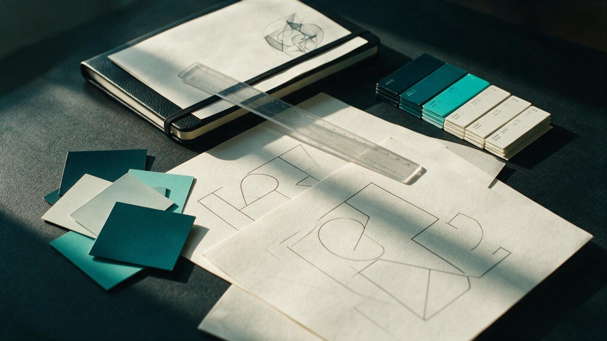
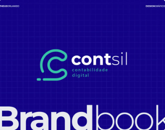
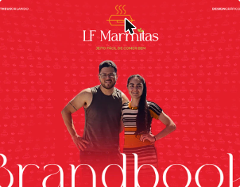
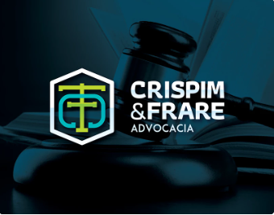

Diagnóstico
Perguntas, sinais e causas que a comunicação isolada não resolve.
ORLANDO — estratégia, marca e governança
Investigamos o que trava, organizamos prioridades e projetamos marca, conteúdo, governança e infraestrutura para empresas que cresceram antes de se estruturar.
Quem confia no nosso trabalho
O problema que identificamos
Empresas que crescem sem se estruturar acumulam ruído: marca, liderança e operação defendendo promessas diferentes, e marketing reagindo a pedidos sem prioridade clara.
Quatro frentes, um sistema.
Perguntas, sinais e causas que a comunicação isolada não resolve.
Percepção de valor, diferenciação e escolha de mercado.
Conhecer a soluçãoPapéis, decisões e alinhamento entre liderança, marketing, comercial e operação.
Investigamos, organizamos e acompanhamos a mudança com evidência.
Três movimentos que sustentam qualquer projeto: entender o cenário, definir a direção e criar o sistema que mantém tudo funcionando.
01
Diagnóstico
Olhamos para o que já existe: histórico, concorrência, canais ativos e pontos que travam o crescimento. Reunimos isso em um retrato claro do momento da empresa, sem achismo.

02
Estratégia
Marca, posicionamento e prioridades saem de decisões registradas — o que fazer primeiro, o que esperar depois e o que fica de fora por enquanto.
03
Execução
Conteúdo, canais e operação passam a seguir um fluxo com dono, prazo e método de acompanhamento — não apenas uma entrega pontual.

Por trás da ORLANDO
A ORLANDO é conduzida por Matheus Orlando. Sua experiência em identidade, posicionamento e comunicação deu origem a uma forma de trabalhar que une olhar criativo, diagnóstico e organização. Hoje, esse repertório sustenta nosso trabalho para transformar marketing disperso em prioridades claras, decisões consistentes e execução coordenada.
Matheus Orlando Fundador, diretor de arte e estrategista de marca
Antes da atuação consultiva da ORLANDO, Matheus desenvolveu projetos de identidade e direção de arte para diferentes negócios. Esta seleção demonstra repertório visual e capacidade de construção de marca; não representa cases nem resultados da consultoria atual.



Direção
Comece com uma conversa de 20 minutos sobre onde sua marca, marketing e negócio estão desalinhados.
Ou escreva para contato@orlandomarketingbranding.com.br